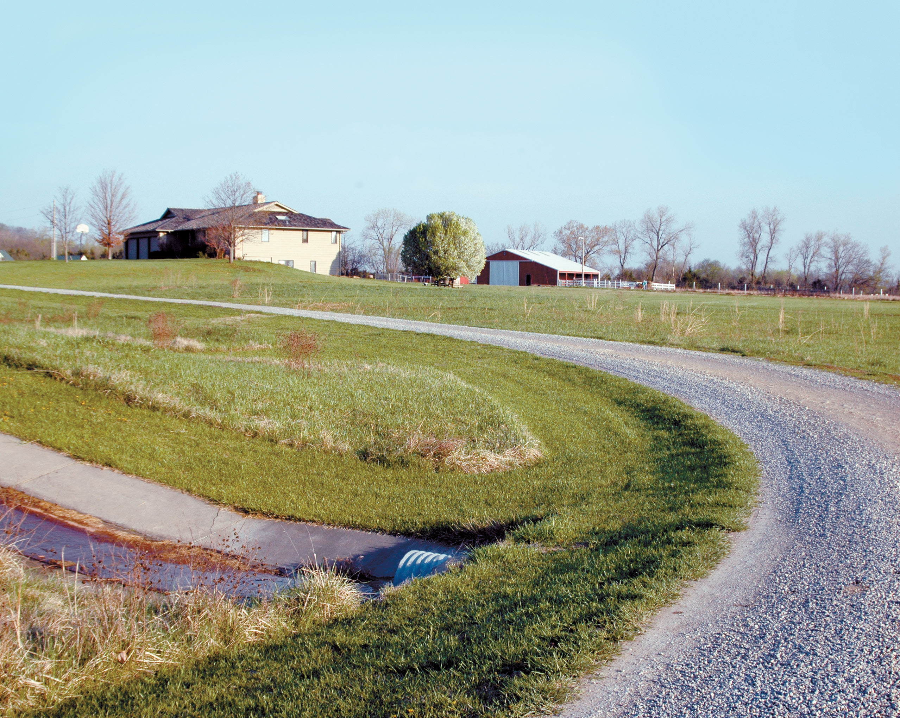
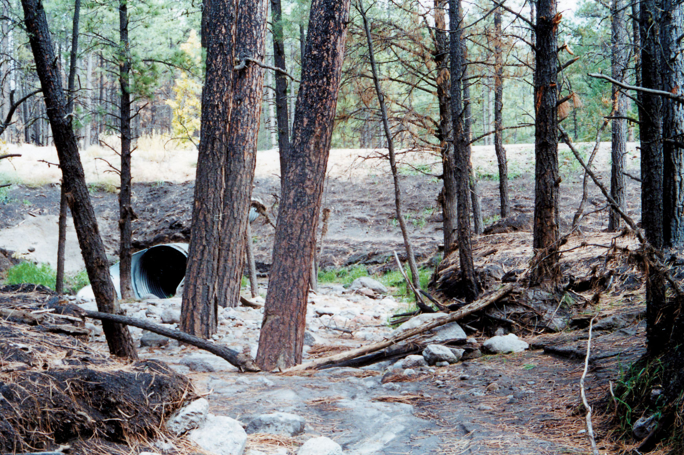
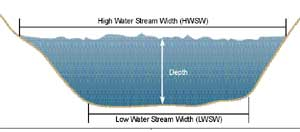
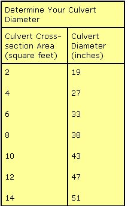

Small streams often crisscross rural land, and even those that remain dry for most of the year may have steep banks that prevent vehicles from crossing. The simplest way to safely drive across such an obstacle, while protecting the stream, is to install a culvert and earth bridge.
Culverts are made from corrugated metal or plastic tubes positioned in a crossing to allow water to pass through without damaging the roadway. The culvert’s corrugation provides a greater strength-to-weight ratio than a smooth pipe. This helps support the weight of vehicles, while mimicking the roughness of a natural stream bottom, which slows the speed of flowing water. Follow the culvert installation steps outlined in this article, and you can install a culvert wherever you need it.
To determine the right culvert size for your situation, you need to consider the dynamics of stream flow and how it changes with the seasons. Peak flow usually is during spring runoff, and it tails off from late summer to early fall. These annual fluctuations can seriously erode exposed soil and cause inadequate crossing structures to fail. As a consequence, culverts should be sized - at a minimum - to handle the annual peak flow, and installed in a manner that will protect the culvert’s strength over time.
Many methods exist to determine a culvert’s correct size. The easiest is one in which field measurements are taken of the stream’s cross section when the stream flow is at its lowest, in late summer or early fall. To take the measurements, you will need a tape measure, four stakes, a hammer, string and a notepad.
1. Begin by scouting the intended crossing. Look along the stream banks for the highest water mark. This is where any vegetation meets bare dirt and rock along the bank.rive in stakes at the high water marks on each bank and tie a string between them. Measure the distance between the stakes and record it as the “high water stream width” (HWSW).
2. Next, locate the lowest water mark. Typically, it borders the flattest portion of the stream bottom. Establish the other two stakes at this level and measure as you did for the high water marks; record this length as the “low water stream width” (LWSW). (See the diagram in the Image Gallery.)
3. The final measurement is the depth of the stream at high water. This is the distance between the stream bottom and the high-water-line string. If the stream bottom is highly irregular, you will need to take several measurements and average them.
Now use this simple formula to determine the stream’s cross-section area (A):
A = (HWSW+LWSW/2) x Depth
A = (5+2/2) x 1
A = 3.5
As shown in this example, if you measured 5 feet as the HWSW, 2 feet for the LWSW and 1 foot for the stream depth at high water, then the stream’s cross-section area would be 3.5 square feet.
The culvert’s cross-section area should be at least 1.25 times the cross-section area of the stream, if the culvert is for a shallow ditch or seasonal stream. But if the stream is subject to flooding, you should install a larger culvert in order to avoid damage due to water backing up and flowing over the roadway during flooding. If flooding is likely, multiply the stream area by 1.75 (for 25-year floods) or by 3 (for 50- to 100-year flood levels).
In the three examples above, the culvert cross-section areas would be: 3.5 x 1.25 = 4.375; 3.5 x 1.75 = 6.125; or 3.5 x 3 = 10.5.
Once you’ve calculated the culvert cross-section area, use the chart in the Image Gallery to determine the diameter of your culvert.
Culvert lengths depend on how wide you want your roadway, as well as the diameter of the culvert and the depth of the dirt fill placed on top of the culvert to make the earthen bridge. Culverts should be set perpendicular (90 degrees) to the road’s centerline. (Culverts not set in at 90 degrees will require a greater length.)
To calculate the length (L) of the culvert you’ll need, add up the width of the roadbed (RB), the width of the two side slopes (SW), plus 1-foot extensions (E) at either end of the culvert:
L = RB + SW + 2E
The side width (SW) will depend upon the diameter of the culvert (CD), the depth of the road fill (RF) and the slope of the sides (S):
SW = (CD + RF) x S x 2
For example, if you want a 10-foot-wide roadbed and you have a 24-inch-diameter culvert, 1 foot of earthen fill on top of the culvert, a standard 1.5:1 side slope (1½ feet wide for every 1 foot in height) and 1-foot extensions on either side, the calculation is:
SW = 2-foot culvert diameter + 1-foot fill = 3 feet x 1.5 slope = 4.5 x 2 = 9
L = 10-foot roadbed + 9 feet of side width + 2 feet of culvert extensions
This example computes to a culvert 21 feet long.
If you’re concerned about the accuracy of your math, contact an Extension agent, state forester or professional consultant to have the figures double-checked before you buy the culvert. Also, check with state and federal agencies for regulations concerning activities within stream zones. Although installing a culvert is permissible under most regulations, you may be required to follow certain guidelines, including what time of year you install the culvert (usually late summer or early fall) or how to dam the water flow, if necessary, while you execute the installation.
Culverts can be purchased at farm or building supply stores. Sometimes, highway departments, the Forest Service or Bureau of Land Management have old culverts in usable condition that can be bought for less than a new one.
You will need a backhoe or excavator and a soil compactor when installing all but the smallest culverts. Excavate the streambed 6 inches deep to make space for the fill on which the culvert will sit. As you excavate, follow the existing streambed gradient (slope), which typically will run from 2 percent to 6 percent. A slope of less than 2 percent can result in excess buildup of sediment and debris inside the culvert, so be careful to get this right. If the culvert is set too high on either end, water can work its way underneath the tube, causing the bridge to wash out; if the culvert is set too deep, it can plug with debris.
After the excavation, spread a 6-inch-deep bed of rock-free soil or sand over the bottom and compact it with a mechanical soil compactor or a blunt-ended, long-handled compacting tool. When compacted, the fill will be about 4 inches deep, allowing the culvert to be set slightly below the stream grade so the water will drop a bit as it enters. Now, place and center your culvert, being careful to minimize any abrasions to the pipe’s protective exterior coating.
Next, fill around the culvert with 6-inch layers of dirt. Compact each layer before you add another and be especially sure the fill material adjacent to the culvert is rock-free. Continue adding fill over the culvert to a depth of at least 1 foot; this will protect the culvert from failure due to the weight of road traffic.
Finally, seed the bare fill dirt slopes with native grass and apply mulch. Also place flat stones or broken pieces of concrete in the streambed at each end of the culvert to protect the fill material from erosion - or you may opt to pour concrete protection. This is called “armoring” and will be especially useful when the water flow increases in the spring.
Sizing and installing your own culvert can be a rewarding experience in self-sufficiency. Take your time and build it correctly, and it will provide many years of service.
|
 PHOTO: BRYAN WELCH You can install a culvert such as this one, which carries overflow from a nearby pond under the roadway. |
 PHOTO: KURT SWEARINGEN Culvert installation can vary depending on size. A large culvert requires a deeper roadbed and longer slopes to protect the crossing's integrity. |
 ILLUSTRATION: THE MOTHER EARTH NEWS EDITORS Take the measurements shown above to install a culvert large enough to handle a stream’s flow without damaging the roadway. |
|
 THE MOTHER EARTH NEWS EDITORS As you tackle your culvert installation project, you'll want to be sure to calculate the best size for your circumstances. |
|
|